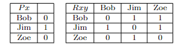

Week 8 Predicate Logic Practice Problems
8.1 Part A
Using the following symbolization key:
- \(Sxy\): \(x\) is a child of \(y\)
- \(Pxy\): \(x\) is a parent of \(y\)
- \(Mx\): \(x\) is a mother
- \(Fx\): \(x\) is a father
- \(d\): David
- \(k\): Kit
translate the following sentences into predicate logic:
- David is a parent of Kit and Kit is the child of David.
- Kit is not a child of David but Kit is a father.
- If Kit is a parent of David then either Kit is a mother or Kit is a father.
- Every mother is a parent of someone.
- Everyone is a child of a father.
- There are mothers which are not fathers.
- Every child of David is a father.
- For every child of David, there is a parent of that child who is a mother.
- Kit has a parent who is neither a mother nor a father.
- Kit is a mother and if Kit has a child then that child is a father.
8.2 Part B
Using the following symbolization key:
- \(Ax\): \(x\) is an animal
- \(Gx\): \(x\) is an alligator
- \(Mx\): \(x\) is a monkey
- \(Rx\): \(x\) is a reptile
- \(Zx\): \(x\) lives at the zoo
- \(Lxy\): \(x\) likes \(y\)
- \(a\): Alfred
- \(b\): Bertrand
- \(c\): Charles
translate the following sentences into predicate logic:
- Alfred, Bertrand and Charles live at the zoo.
- Bertrand is a reptile, but not an alligator.
- If Charles likes Bertrand then Bertrand is a monkey.
- If both Bertrand and Charles are alligators, then Alfred likes them both.
- Every animal at the zoo is either a monkey or an alligator.
- Some reptiles live at the zoo.
- Every alligator is a reptile.
- There are reptiles which are not alligators.
- Bertrand likes all monkeys that live at the zoo.
- Every monkey that Charles likes, is also liked by Alfred.
8.3 Part C
Using the following symbolization key:
- \(Exy\): \(x\) is to the east of \(y\)
- \(Nxy\): \(x\) is to the north of \(y\)
- \(Tx\): \(x\) is a town
- \(Mx\): \(x\) is a metropolis
- \(h\): Hong Kong
- \(p\): Paris
- \(l\): Los Angeles
- \(n\): New York
- \(a\): Antarctic
translate the following formulas into English:
- \((Nnl \& Enl)\)
- \((\sim Nhp \& \sim Epn)\)
- \(\forall x(Mx \supset Nxa)\)
- \(\exists x(Tx \& Nxn)\)
- \(\forall x(Tx \& Exl)\)
- \(\exists x(Mx \& Nnx)\)
- \(\forall x(Mx \supset (Nxp \lor Epx))\)
- \(\forall x(Tx \supset \forall y( Nyx \supset Eny))\)
- \(\exists x(Mx \& \forall y(Ty \supset \sim Nyx))\)
8.4 Part D
Let:
- \(b\): Bob
- \(j\): Jim
- \(z\): Zoe
and consider the following model:

Evaluate the following formulas for truth or falsity:
- \(Pb\)
- \(Rbz\)
- \((Pb \lor Rbz)\)
- \(((\sim Pb \& Rbz) \equiv Rjz)\)
- \(\sim (Pj \supset Rzz)\)
- \(((Pb \lor Pj) \supset (Rbj \& Rzj))\)
- \((Pj \supset (Rbb \supset Rjj))\)
- \(\exists x(Px \& \exists y (Rxy))\)
- \(\forall x \sim (Rxx)\)
- \(\forall x (Px \supset Rxz)\)
8.5 Solutions
Part A:
- \((Pdk \& Skd)\)
- \((\sim Skd \& Fk)\)
- \((Pkd \supset (Mk \lor Fk))\)
- \(\forall x(Mx \supset \exists y (Pxy))\)
- \(\forall x\exists y (Sxy \& Fy)\)
- \(\exists x(Mx \& \sim Fx)\)
- \(\forall x(Sxd \supset Fx)\)
- \(\forall x(Sxd \supset \exists y(Pyx \& My))\)
- \(\exists x(Pxk \& \sim(Mx \lor Fx))\)
- \((Mk \& (\exists x (Sxk \supset Fx))\)
Part B:
- \((Za \& Zb \& Zc)\)
- \((Rb \& \sim Gb)\)
- \((Lcb \supset Mb)\)
- \(((Gb \& Gc) \supset (Lab \& Lac))\)
- \(\forall x((Ax \& Zx) \supset (Mx \lor Gx))\)
- \(\exists x(Rx \& Zx)\)
- \(\forall x(Gx \supset Rx)\)
- \(\exists x(Rx \& \sim Gx)\)
- \(\forall x((Mx \& Zx) \supset Lbx)\)
- \(\forall x((Mx \& Lcx) \supset Lax)\)
Part C:
- New York is north of and east of Los Angeles.
- Hong Kong is not north of Paris and Paris is not east of New York.
- All metropolises are north of Antarctica.
- There is a town north of New York.
- Everything is a town east of London.
- New York is north of some metropolis.
- All metropolises are either north of Paris or Paris is to the east of them.
- New York is east of everything north of every town.
- There is a metropolis such that all towns are not north of that metropolis.
Part D:
- False
- True
- True
- True
- True
- True
- True
- True
- True
- True